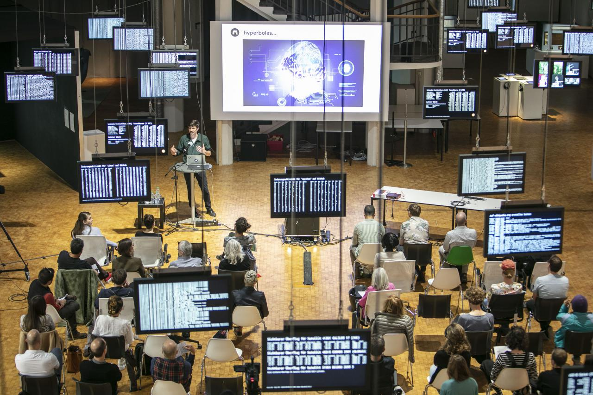

ZDF | aspekte - A.I. & Art
A short while ago Me the drag queen and I featured on German National TV! Heres a clip of me on ‘aspekte’ on ZDF - similar to BBC & their arts/culture program. Hilariously they branded me as the ‘Rembrandt of A.I.’ and aired my Machine Learning Porn on national television!
Jake Elwes and Me the Drag Queen answer 10 questions about The Zizi Project
Jake Elwes and Me the Drag Queen discuss The Zizi Project.
[DFC Talk] Productive Uncertainty: Gretchen Andrew & Jake Elwes
Artificial intelligence, like human intelligence, gets its education from somewhere. What if we educated Artificial Intelligence based on the world we want, not the world we have? Gretchen Andrew & Jake Elwes discussing on a better future for AI
Monday, September 13, 6pm OÖ Kulturquartier, Linz
You & AI Online Event (Onassis Foundation) - Zizi & Me (& Jake)
The Photographers Gallery Screen Walk - Zizi & Me (& Jake)
Lovely feature by Alex Estorick & Beth Jochim in Flash Art.Flash Art
"Although the community of computational artists and creative AI hackers still exists largely outside of the contemporary art scene, a growing body of artists has sought to traverse both territories, in the process foregrounding the cultural, ethical, and social problems that underpin our new digital architecture. In recent years, Jake Elwes has distilled the full range of AI-informed strategies into a diverse series of outputs: transcriptions of tech leaders’ numerical babblings (dada da ta, 2016); video installations projecting conversations between two neural networks (Closed Loop, 2017); and 2016’s Auto-Encoded Buddha — a tribute to Nam June Paik’s TV Buddha (1974) — in which a computer struggles to depict the Buddha’s true essence. Through these works and others, Elwes has actively positioned himself within the long histories of video and computer art, and against the notion that AI is capable of expressing intentionality."
Read more: Episode I. Artificial Intelligence and Drag Performance: Jake Elwes’s “The Zizi Project”
Art and Technology, Season 3 Episode 10: Gender
I was invited to be part of a series on Art, Technology and Gender. 3 x 3 minute films form episode 10 of ART+TECHNOLOGY brought to you by Hyundai Motor Company and produced in partnership with Bloomberg Media Group.
National Gallery X + FLUX
FLUX & National Gallery X talk, 10th June 2020 (Zoom virtual talk). GENDER*UCK - Media art beyond and between concepts of Gender
BBC4 - Kill Your TV
Kill Your TV: Jim Moir’s Weird World Of Video Art
I feautured on a BBC4 documentuary about video art which was aired on 24th November. The
programme featured work and interviews from artists and researchers, including Nam June
Paik, Rachel Maclean, Jake Elwes, Isaac Julien, Peter Donebauer, David Hall, Elaine Shemilt,
George Barber, Adam Lockhart, Catherine Elwes, Stephen Partridge, Harrison & Wood.
The interview and my work CUSP is featured towards the end of the programme, around 52
minutes.
Watch: Kill Your TV: Jim
Moir’s Weird World Of Video Art
Edinburgh - Beyond Festival
Beyond is the R&D conference for the creative industries. It explores the relationship between research, academia and business innovation and tackles the challenges impacting the future of the sector.
In its 2nd year, Beyond 2019 focused on the intersection between Artificial Intelligence and creativity, with themes addressing the opportunities, challenges and controversies these innovations present.
Beyond provides a unique forum to share knowledge, discover opportunities and connect with business leaders, creatives, researchers, policy makers, journalists and funders.
Taking place at the Assembly Rooms in Edinburgh in November, this year’s Beyond featured lively debate, panels and short talks.
Today Art Museum - Beijing, China
Opening ceremony for the exhibition 'Deja Vu' at the Today Art Museum in Beijing. I was invited to speak as well as presenting CUSP 2019 and Dada da ta 2016 in the show.
Photo Irene Medina. Fundación TelefónicaFundación Telefónica - Madrid
I was invited to give a talk about the field of AI + Art, explaining the technologies
involved and showing work engaging with the subject. Watch here
Taking place at Espacio Fundación Telefónica, Madrid and organised by ADA and the Telefonica
Foundation.
“This event will explore the role of AI in art with contributions from an artist working
with AI, a patron promoting AI artists in order to bring them to the attention of collectors
and institutions around the world and a lawyer specialising in intellectual property law who
will address the copyright considerations.
ZKM | Talk and Collection
I’m delighted that Closed Loop
2017 has joined the permanent collection at the ZKM | Center for Art and Media,
Karlsruhe, Germany.
"In an extraordinary compilation, ZKM presents the main works from its globally unique
collection. The collection of the ZKM | Karlsruhe ranks among the largest media art
collections in the world. It exemplifies the transformation of art in the face of changing
technologies of production, reception, and distribution. Artists react to changes in media
and sometimes anticipate developments that only years later will be taken for granted by
society as a whole: they write the history of the future.
»Writing the History of the Future. Part I« looks at art from the middle of the 20th century
onwards. The exhibition shows aesthetic experiments with script and language that engage
with different media. It presents the first attempts at computer-generated graphics and
poetry as well as contemporary works dedicated to the automation of the creative act. It
also addresses the material conditions of individual and cultural memory – between erasing
and forgetting, storing and remembering. Along side my work Closed Loop (2017), the
exhibtion incldues works
from Ryoji Ikeda, Marina Abramovic, Nam June Paik, Dieter Roth,
Andreas Gursky, Bill Viola, Manfred Mohr, Max Ernst, Olafur Eliasson, Pipilotti Rist,
Richard Serra, Walter Griers, Christian Boltanski, Joan Jonas and John Cage
I was also invited to give a talk as part of the Open Conference Kunst und Künstliche
Intelligenz (Open Codes exhibition program).
“The invited scientists and developers will deal with the technical aspects of automated
methods of creativity, cognition and problem solving. Practical experiences with new
technologies will be exchanged in the context of a workshop. The speakers will present their
projects and talk about production pragmatics and their reflections on working with AI. The
program will be rounded off by audiovisual performances produced with machine learning
tools.
Venice Biennale | CYFEST-12

CUSP 2019 was showing as part of CYFEST which opened as an off site exhibition during the
Venice Biennale.
“CYLAND MediaArtLab in collaboration with Centre of Studies of Russian Art CSAR presents the
exhibition ID. ART:TECH.
ID. ART:TECH EXHIBITION is dedicated to the ID as a phenomenon with wide scatter of meanings
– from the term in psychoanalysis (id) to the document that certifies one’s identity (ID).
We are interested in what ID represents in the world of people and things, what new meanings
come to life when they interact and what this leads to.
From May 10 to June 28, 2019, in the space Ca’ Foscari Zattere Cultural Flow Zone, there
will be a show of works by the contemporary authors from Russia, Italy, Great Britain, USA,
Belgium, France, Norway as well as artworks by the classics of the 20th century. Among the
exhibit’s participants are the New York underground guru of sound art and renowned
minimalist composer Phill Niblock, Russian artist Andrey Bartenev, artist and curator of the
Central Asia Pavilion at the 55 th Venetian Biennale Ayatgali Tuleubek, St. Petersburg
artist, curator, winner of Sergei Kuryokhin Award and Innovation Prize Peter Belyi,
distinguished Russian artist and founder of sots art Erik Bulatov and others.
The project’s exposition is a visual examination of the subject of identification: from the
forms of sociopolitical functioning of portraits of Soviet non-conformism to the images of
mass culture, aesthetics of ID cards, passport picture and social networks.
Zabludowicz Invites
I was invited to create a new work for a show at the Zabludowicz collection as part of their
Invites program. I showed a new work CUSP.
“Zabludowicz Collection is a philanthropic organisation including a growing collection of
contemporary art and a programme of international exhibitions, events and artists’
residencies.
Founded in 1994, the Collection is dedicated to fostering new audiences and a sustainable
environment for contemporary art, offering a variety of opportunities and support for
artists and art organisations. All of its activities are privately funded and free for the
public to access.
The collection contains over 3000 works of art by more than 600 artists, spanning 40 years
of art production. Its focus is on emerging art from the late 20th century to the present
day and it is in constant development. The Collection has been directed since 2006 by
Elizabeth Neilson.
In 2007 the Collection opened its main exhibition space in London, in a 19th Century former
Methodist Chapel, where it has worked with artists, curators and the collection to produce
exhibitions and events examining contemporary art practice in a public forum. The Collection
now also runs an international programme of exhibitions, events, residencies and commissions
across four permanent venues in the UK, USA and Finland. The programme is directed by
Maitreyi Maheshwari.
Gradient Descent, Nature Morte, Dehli


I had the pleasure of exhibiting in a group show at one of India's foremost contemporary art
galleries - Nature Morte in Dehli.
The show featured works created entirely by Artificial Intelligence in collaboration with
seven international artists:
Harshit Agrawal, Memo Akten,
Jake Elwes, Mario
Klingemann, Anna Ridler,
Nao Tokui, and Tom
White.
‘Gradient Descent’ was
curated by 64/1, an art
curation and research collective focused on building public understanding of how artists and
artificial intelligence can come together to create art for the post-human age. 64/1 was
founded by Raghava KK and Karthik Kalyanaraman out of Bangalore, India.
I had an wonderful week meeting artists, academics and policy makers. I spoke on a panel
about my art process and collaborating with a machine at an INK talk. It was such a pleasure
to be invited out by Raghava and Karthik having discussions with them and the other artists
about our inspirations and the future.
Press:
Artnet, Financial
Times, Vogue
India, Forbes
India, The
Hindu, Fastcompany
AI Art Festival - Leicester
I spoke at the AI Art Festival in Leicester alongside the fabulous artists: Prof Ernest Edmonds, Mario Klingemann and Libby Heaney .
Bloomberg New Contemporaries


I'm delighted to have been selected to show work at this years New Contempories. "New
Contemporaries is the leading organisation supporting emergent art practice from UK art
schools. Since 1949 New Contemporaries has consistently provided a critical platform for new
and recent fine art graduates primarily by means of an annual, nationally touring
exhibition.
Showcasing new and recent fine art graduates since 1949, the roster of alumni encompasses
artists such as Frank Auerbach, Paula Rego, David Hockney, Damien Hirst, Tacita Dean, Mark
Lecky, Ed Atkins, Marvin Gaye Chetwynd and Rachel Maclean.
For the first time the national touring exhibition will launch at BALTIC Centre for
Contemporary Art, Gateshead and BALTIC’s project space at BALTIC 39, Newcastle upon Tyne
from 29 September to 26 November 2017. The exhibition will then travel to Block 336, London,
from 27 January to 3 March 2018." - newcontempories.com
Ars Electronica Festival

 Image credits: Ars Electronica, Tom Mesic & Florian Voggeneder
Image credits: Ars Electronica, Tom Mesic & Florian Voggeneder
Ars Electronica's theme for 2017 in
Artificial Intelligence, I was invited to show four pieces as part of the festival, Latent Space, Closed Loop and Machine Learning Porn at this
years Ars Electronica Fetival in Linz, Austria.
I will also be giving a talk and will show Dadada
Ta with the Artist Development Agency.
"Art, technology, society. Since 1979, Ars Electronica has sought out interlinkages and
congruities, causes and effects. The ideas circulating here are innovative, radical,
eccentric in the best sense of that term. They influence our everyday life—our lifestyle,
our way of life, every single day.
Once a year, Ars Electronica invites artists, scientists and researchers from all over the
world to a conclave in Linz to confront a specific, interdisciplinary theme in the context
of speeches, workshops, exhibitions and symposia."